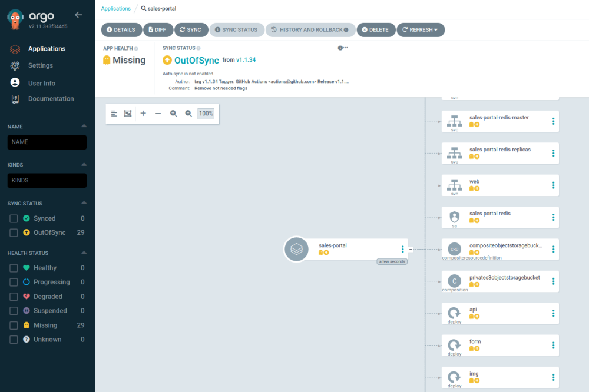
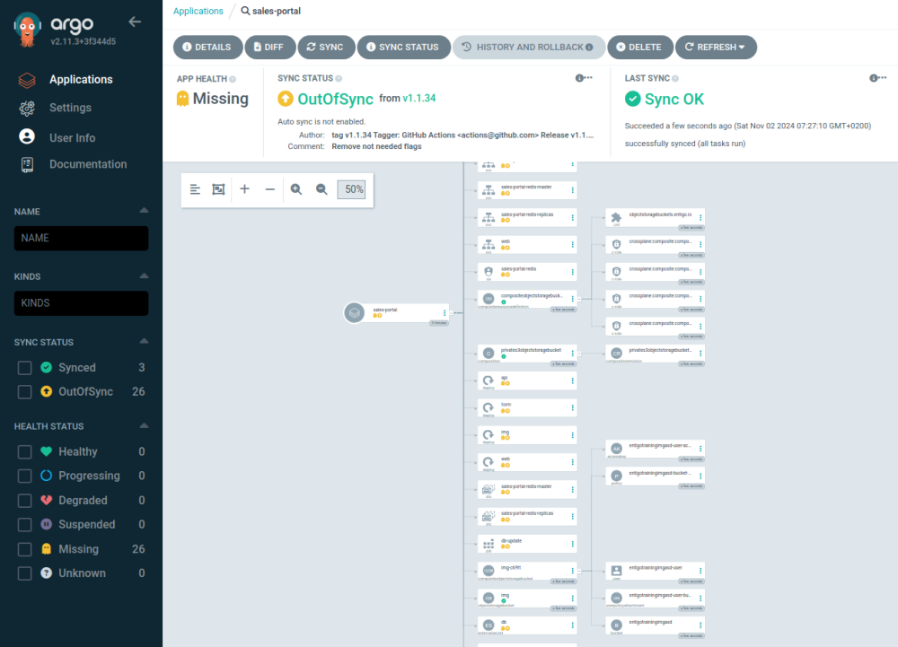
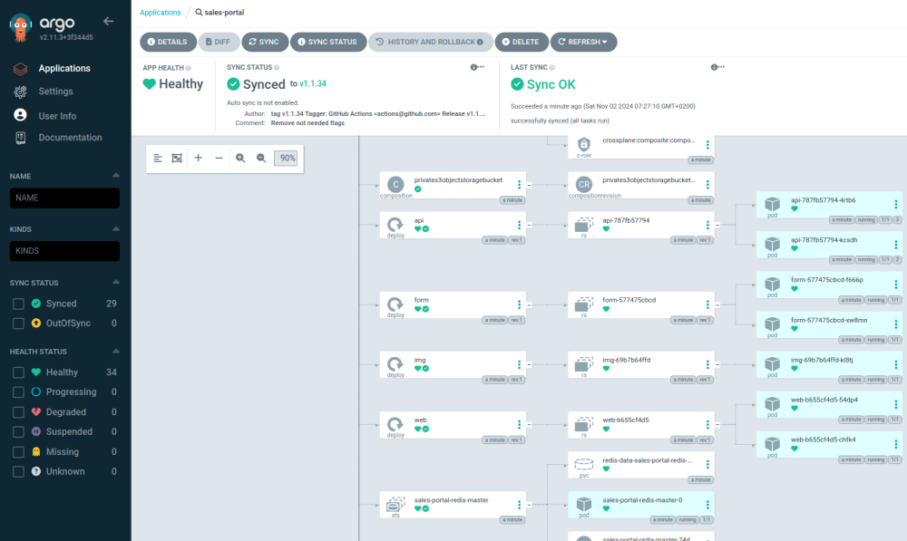

Infralib - Lab 4: New application and updates

Infralib is intended for infrastructure management, not end user applications. But in this lab we will install a taining application to demonstrate some features it has.
Add a new application that is present in the https://github.com/martivo/entigo-infralib-training source.
Show diff ~/3/config_il.yaml ~/4/config_app.yaml +
sources:
- url: https://github.com/entigolabs/entigo-infralib-release
- url: https://github.com/martivo/entigo-infralib-training
version: 2.0.30
prefix: dev
steps:
- name: net
type: terraform
approve: major
modules:
- name: main
source: aws/vpc
- name: dns
source: aws/route53
- name: infra
type: terraform
approve: major
vpc:
attach: true
modules:
- name: eks
source: aws/eks
inputs:
eks_cluster_public: true
eks_main_min_size: 1
eks_main_max_size: 3
eks_main_volume_size: 100
eks_tools_desired_size: 1
eks_mon_max_size: 0
iam_admin_role: AWSReservedSSO_AWSAdministratorAccess
aws_auth_user: adminuser
cluster_enabled_log_types: |
[]
- name: crossplane
source: aws/crossplane
- name: database
source: aws/mariadb
inputs:
allocated_storage: 21
- name: apps
type: argocd-apps
approve: major
modules:
- name: argocd
source: argocd
inputs:
argocd:
server:
ingress:
annotations:
alb.ingress.kubernetes.io/group.name: external
alb.ingress.kubernetes.io/scheme: internet-facing
- name: aws-alb-{{ .config.prefix }}
source: aws-alb
- name: crossplane-system
source: crossplane-core
- name: crossplane-aws
source: crossplane-aws
- name: external-dns-{{ .config.prefix }}
source: external-dns
- name: istio-base
source: istio-base
- name: istio-system
source: istio-istiod
- name: aws-storageclass
source: aws-storageclass
- name: metrics-server
source: metrics-server
- name: external-secrets-{{ .config.prefix }}
source: external-secrets
inputs:
global:
createClusterSecretStore: true
+ - name: sales-portal
+ source: training-application
Copy the updated configuration and commit changes to Git.
$ cp ~/4/config_app.yaml ~/iac/config.yaml
$ cd ~/iac
$ git commit -a -m"Instal the Entigo Training Application."
$ git push
A pipeline in Gitlab has been triggered to apply the changes. https://gitlab.infralib.learn.entigo.io/app-uN/iac/-/pipelines
While the pipeline runs You can observe the application creation in ArgoCD.
After the "dev-apps" steps "Plan" stage finishes the "sales-portal" application will appear in the ArgoCD. https://argocd.dev.uN.entigo.dev/applications
When the "Apply" stage of the "dev-apps" step has not started, none of the resources have been created.

After the "Apply" stage starts the objects are being created.

Finally the object becomes healthy and the pipeline finishes.

Use the aws cli to copy the generated code into the lab server.
$ aws s3 cp --recursive --exclude '*/.terraform/*' s3://dev-$AWS_ACCOUNT-$AWS_REGION/steps ~/lab_4.1
The application expects the database hostname and database name in the input. It will find the inputs automatically from the "aws/mariadb" Terraform module.
The Infralib Agents reads the added file of the module https://github.com/martivo/entigo-infralib-training/blob/v2.0.30/modules/k8s/training-application/agent_input_aws.yaml.
You can see the literal values in the "sales-portal.yaml" file.
$ cat ~/lab_4.1/dev-apps/sales-portal.yaml | grep --color=always -C 30 " host:\| name:\| db:"
There are no passwords in the infrastructure code. The "aws/mariadb" Terraform module has saved the database username and password in the AWS SM.
The application leverages External Secrets to get the password and username.
$ kubectl get externalsecrets -n sales-portal db -o json | jq .spec.data
The "ExternalSecrets" object creates the "Secret" object using the values from AWS SecretsManager.
$ kubectl get secret -n sales-portal db -o json | jq .data
Try to use the application by adding advertisements. https://sales.dev.uN.entigo.dev
Update the training application to the latest version. The newest version comes with an image upload feature. For that an S3 bucket is used and a new workload is installed called "img".
Remove the version lock from the source to enable update to a newer version.
Show diff ~/4/config_app.yaml ~/4/config_updates.yaml +
sources:
- url: https://github.com/entigolabs/entigo-infralib-release
- url: https://github.com/martivo/entigo-infralib-training
- version: 2.0.30
prefix: dev
steps:
- name: net
type: terraform
approve: major
modules:
- name: main
source: aws/vpc
- name: dns
source: aws/route53
- name: infra
type: terraform
approve: major
vpc:
attach: true
modules:
- name: eks
source: aws/eks
inputs:
eks_cluster_public: true
eks_main_min_size: 1
eks_main_max_size: 3
eks_main_volume_size: 100
eks_tools_desired_size: 1
eks_mon_max_size: 0
iam_admin_role: AWSReservedSSO_AWSAdministratorAccess
aws_auth_user: adminuser
cluster_enabled_log_types: |
[]
- name: crossplane
source: aws/crossplane
- name: database
source: aws/mariadb
inputs:
allocated_storage: 21
- name: apps
type: argocd-apps
approve: major
modules:
- name: argocd
source: argocd
inputs:
argocd:
server:
ingress:
annotations:
alb.ingress.kubernetes.io/group.name: external
alb.ingress.kubernetes.io/scheme: internet-facing
- name: aws-alb-{{ .config.prefix }}
source: aws-alb
- name: crossplane-system
source: crossplane-core
- name: crossplane-aws
source: crossplane-aws
- name: external-dns-{{ .config.prefix }}
source: external-dns
- name: istio-base
source: istio-base
- name: istio-system
source: istio-istiod
- name: aws-storageclass
source: aws-storageclass
- name: metrics-server
source: metrics-server
- name: external-secrets-{{ .config.prefix }}
source: external-secrets
inputs:
global:
createClusterSecretStore: true
- name: sales-portal
source: training-application
Copy the updated configuration and use the Infralib Agent "update" command.
$ cp ~/4/config_updates.yaml ~/iac/config.yaml
$ cd ~/iac
$ docker run -it --rm -v "$(pwd)":"/conf" -e AWS_ACCESS_KEY_ID -e AWS_SECRET_ACCESS_KEY -e AWS_REGION -e AWS_SESSION_TOKEN entigolabs/entigo-infralib-agent ei-agent update -c /conf/config.yaml
The "dev-net" step does not use modules from the new source that has updates, so the Infralib Agent will skip running it.
The "dev-infra" step will only run once to make sure the code is in sync with the infrastructure. Later version changes of this update do not run the pipeline since the "aws/mariadb" modules checksum does not change.
The "dev-apps" step is approved automatically for each version. https://eu-north-1.console.aws.amazon.com/codesuite/codepipeline/pipelines/dev-apps/view?region=eu-north-1
The version 2.0.31 contains a database schema update and a new "img" workload. Verify that the new bucket is created https://eu-north-1.console.aws.amazon.com/s3/buckets?region=eu-north-1
The version 2.0.32 updates the "api" and "form" workloads to support the new feature. It is possible to make sure the api and form components are working before updating the user interface of the "web" component to allow for image uploads.
The version 2.0.33 updates the "web" workload to display the new UI for the users.
After the update is finished try to use the application and add advertisements with pictures. https://sales.dev.uN.entigo.dev (Try reloading the page when the image upload is not visible.)
Continue to Lab 5. https://html.infralib.learn.entigo.io/5